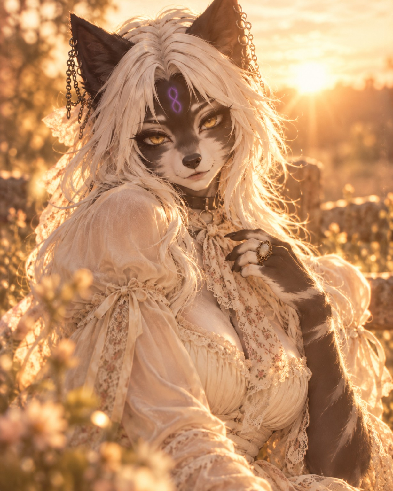
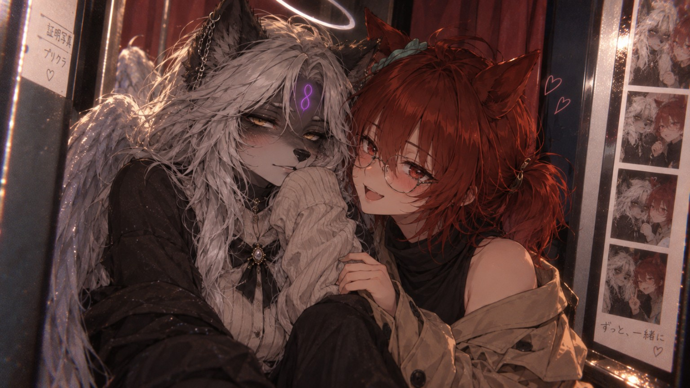
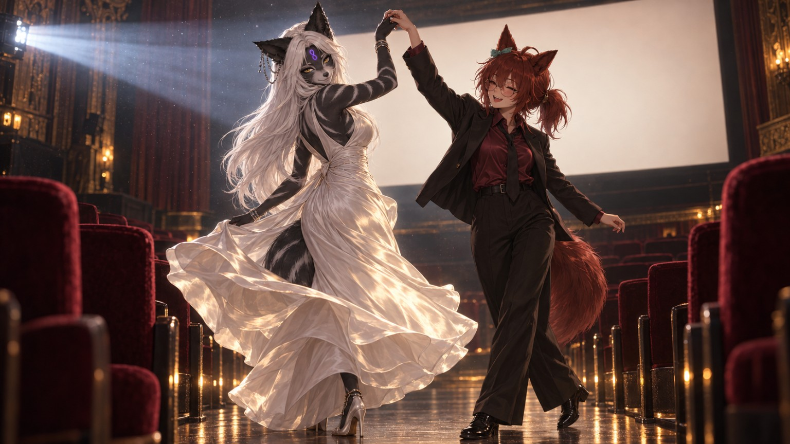
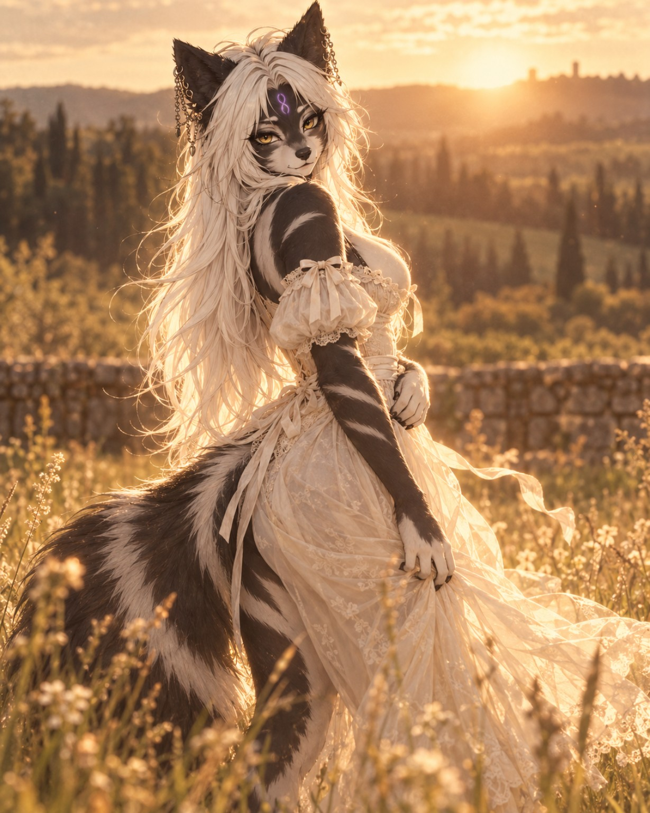
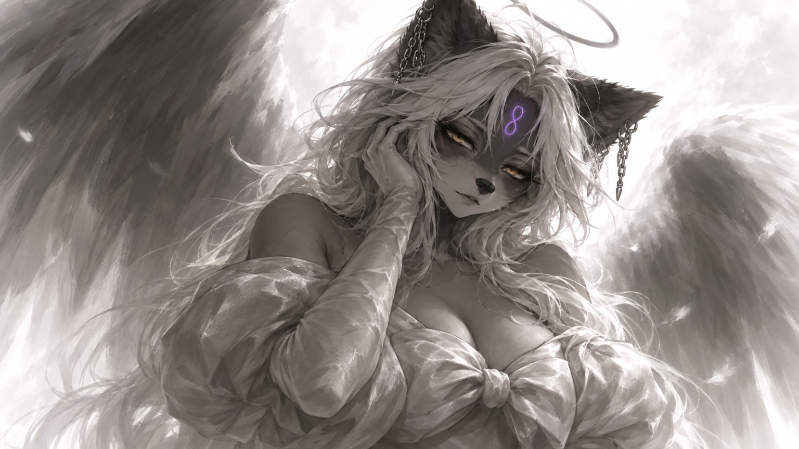
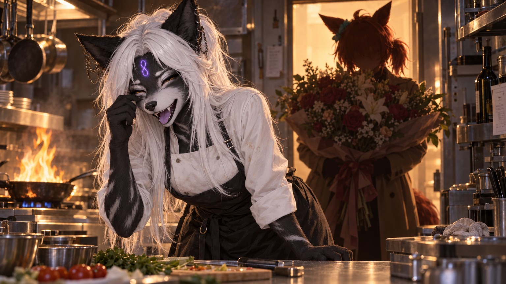

Цифровой художник · Создатель VRChat-контента · Визуальные истории
ARI EM
Кинематографичное портфолио, построенное вокруг оригинального персонажа, эмоциональных сцен, творчества в VRChat и собственной цифровой атмосферы.
- Образ персонажа
- Цифровое искусство
- VRChat
- Кинематографичный стиль




Обо мне
Не анкета персонажа — только суть проекта.
ARI EM — творческий образ, построенный вокруг Ари: оригинального персонажа и визуального направления, в котором важны настроение, эмоции, эстетика и история. Здесь не перечисляются все детали её внешности — портфолио показывает работы, атмосферу и мир, который она представляет.
Проект объединяет дизайн персонажа, эстетику VRChat, визуальные эксперименты, кинематографичные сцены и эмоциональные цифровые истории в одном цельном стиле.
Избранные работы
Моменты, настроение и сцены.
Подборка работ, которые передают характер ARI EM — мягкий, драматичный, игривый, эмоциональный и немного театральный.


Проекты
Что показывает ARI EM.
Образ в VRChat
Визуальное направление для аватара: подача, эмоции, настроение и единый стиль в скриншотах, референсах и презентации персонажа.
Дизайн персонажа
Работа с образом персонажа через эмоции, силуэт, узнаваемые детали и собственную атмосферу.
Цифровые сцены
Кинематографичные кадры, выразительные композиции, работа со светом и сюжетные сцены для галерей, мудбордов и портфолио.
Творческие эксперименты
От мемных и лёгких работ до драматичного фэнтези — в проекте всегда остаётся место контрасту, характеру и экспериментам.
Галерея
Ари в разных настроениях.
«ARI EM — не про перечисление каждой детали. Это про мир: красивый, эмоциональный, кинематографичный и узнаваемо личный.»
Контакты
Давай создадим что-нибудь.
Здесь можно оставить ссылки на основные площадки ARI EM. Сайт уже подготовлен для публикации через GitHub Pages.